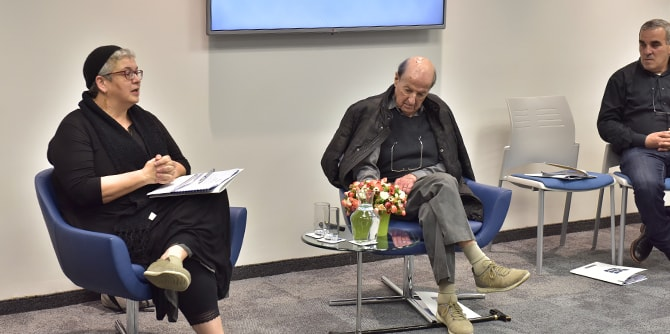

Many Mandel graduates are educational leaders and managers who are developing innovative approaches, initiatives, and programs as part of their vision and sense of mission. Many of these graduates share an interest in presenting these projects to the Ministry of Education. The “Tuesdays at Mandel” series provides graduates with an opportunity to present their views and their work to each other in an unmediated context, facilitating deep dialogue based on the shared language they develop as part of their studies at the Mandel School for Educational Leadership.
A “Tuesdays at Mandel” event held at the Mandel Graduate Unit on December 25 hosted
Dr. Miri Shlissel-Adler, chair of the Pedagogical Secretariat of Israel's Ministry of Education and a graduate of Cohort 4 of the Mandel School.

Dr. Shlissel-Adler opened the evening’s discussion by presenting the challenges and opportunities that lay before her in her work for the Ministry of Education. She shared her professional vision and described the ways in which she will work to realize it in her new position. Subsequently, graduates presented six new programs and initiatives.
Gidi Yehoshua, a graduate of Cohort 22 and director of the video and media department at the Center for Educational Technology (CET), gave a presentation on today’s educational revolution and the new international teachers working on digital platforms. He explained how this phenomenon might be harnessed to improve learning and education in Israel as well.
Shimrit Barda, the education program director at the Applied Center for the Psychology of Social Change at the Interdisciplinary Center (IDC) Herzliya, and her colleague Anat Yona Amedey, the Center’s education change leader, demonstrated how applied research in the field of inter-group relations can serve the field of education and promote education that fosters cooperation. Shimrit and Anat are both graduates of Cohort 24 of the Mandel School for Educational Leadership.
Orit Sommer, a graduate of Cohort 23 and principal of the Artists Elementary School in Ramla, suggested changes to the structure of the elementary school week that could reduce student violence and burnout, strengthen students' sense of security, and give students greater capacity to devote themselves to learning processes.

Dr. Gidi Kaplan, a graduate of Cohort 19 and a secondary-school teacher of robo-physics, presented new avenues for developing students’ self-efficacy and encouraging their creativity. He also shared his experience in integrating “making” activities into elementary education and in teaching robo-physics at the high school level.
Myriam Darmoni Sharvit and Shula Mola, graduates of Cohort 12, and Dr. Shany Payes, a graduate of Cohort 23 – all three of whom work for the Department of Civic Education and Coexistence at the Center for Educational Technology – presented the “shared education” approach, which promotes partnerships between schools of different educational streams in a common geographic area. They focused in particular on the teacher-training aspects of this approach, which can make a significant contribution to the professional development of teachers in the field of global skills.
Naomi Jaffe-Eini, a graduate of Cohort 22, and a psychologist and educational entrepreneur, presented and demonstrated a model for learning sessions that are based on a “psychological reading” of a biblical text, which serves as a basis for authentic and relevant discourse that provides teachers and therapists with tools to empower and prepare students for life’s challenges.
The evening was planned and led by
Dr. Granit Almog-Bareket, director of the Mandel Graduate Unit, and
Ayala Bavly, the Unit’s editing manager. Participants included
Professor Haim Adler, faculty member of the Mandel Graduate Unit, and many graduates who responded to the topics presented, contributed their knowledge and experience, and formed future collaborations.
{kind=link}